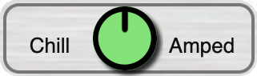
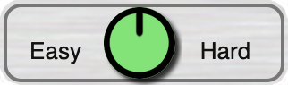
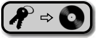
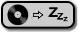

Digger is designed to note your impressions intuitively, with minimized
distraction and possible enhancement of your listening experience. All songs
default as average. Adjust as you see fit whenever you like.

Perhaps "Chill" reflects how you find this song slow, quiet, or
relaxing. Maybe "Amped" indicates it's fast, loud, or activating.
Adjust as you like.

Perhaps "Easy" reflects how you find this song soothing, consonant
or simple. Maybe "Hard" indicates it's challenging, dissonant, or
complex. Whatever you feel.
 Toggle keywords
to associate a song with common listening situations. Hit the '+' button to
add a keyword. The default tags have been chosen through trials to yield
excellent selection power; for example the
Toggle keywords
to associate a song with common listening situations. Hit the '+' button to
add a keyword. The default tags have been chosen through trials to yield
excellent selection power; for example the "Social" keyword,
combined with Energy Level and Approachability range settings can pull
appropriate music for everything from a relaxed brunch to a high energy
party.
 The star bar lets you
mark a song better or worse relative to your collection. Everything in your
collection is worth keeping, but if it's a personal anthem or
underwhelming album filler, this is what to adjust.
The star bar lets you
mark a song better or worse relative to your collection. Everything in your
collection is worth keeping, but if it's a personal anthem or
underwhelming album filler, this is what to adjust.
If you have something to note, the  comment button opens text space suitable for a
sentence or two. Longer stories and discussions are best posted separately.
Links in comments might not be clickable on all platforms. Comment text is
searchable within Digger.
comment button opens text space suitable for a
sentence or two. Longer stories and discussions are best posted separately.
Links in comments might not be clickable on all platforms. Comment text is
searchable within Digger.
The  share button copies all
information about a song, including your annotations, to DiggerHub or the
clipboard for sharing with others. The
share button copies all
information about a song, including your annotations, to DiggerHub or the
clipboard for sharing with others. The  sleep button is an extended transport control
allowing you to pause playback when a song ends.
sleep button is an extended transport control
allowing you to pause playback when a song ends.
 Tuning Options
Tuning Options
The tuning fork in the upper right of the player panel provides detailed
song information and advanced rating actions.
Digger selects any song at most once in 24 hours and prefers least
recently played. If a song seems suggested too often, marking
it Tired switches the playback frequency from
'P' (playable) to 'B' (backburner) meaning it will
be played at most once every 90 days. Skipping a backburner song makes it
a 'Z' (sleeper) that plays at most once every 180 days.
Skipping a sleeper song marks it 'O' (overplayed) and eligible
to be selected once a year. If a song has played enough for this lifetime, or
if it doesn't stand on its own outside of the album, "Don't
Suggest" disqualifies it from selection.
Digger automatically marks duplicate songs played so you don't get an
album song suggested again from a compilation. Dupes are checked via song
metadata, so a remix or a separate album release might still be
suggested.  adds or
overwrites all currently selected keywords to all songs on the album.
 marks all album
songs tired.
 ) at the top center of
the app and choose "Music Files" to set where Digger should look.
If there are folders Digger should avoid, use the "Ignore Folders"
button under the library options. Folder names can end with an asterisk
('*') wildcard.
) at the top center of
the app and choose "Music Files" to set where Digger should look.
If there are folders Digger should avoid, use the "Ignore Folders"
button under the library options. Folder names can end with an asterisk
('*') wildcard.  (Album) mode with suggestions active. To play
individual songs, switch to
(Album) mode with suggestions active. To play
individual songs, switch to  (Deck) mode. To find something specific, use
(Deck) mode. To find something specific, use  (Search). Song playback follows either album or
deck order, depending on which is active.
(Search). Song playback follows either album or
deck order, depending on which is active.  Filter on up 4
keywords at once. Each active keyword has a 3-way toggle to specify if
matching songs must have the keyword, must not have the
keyword, or not specified. Tap the keys icon to choose which keywords are
active and in what order. The default keywords are:
Filter on up 4
keywords at once. Each active keyword has a 3-way toggle to specify if
matching songs must have the keyword, must not have the
keyword, or not specified. Tap the keys icon to choose which keywords are
active and in what order. The default keywords are: "Standard" means 2.5 stars or
higher, including all songs that have not had their rating value adjusted
from the default initial value. Tap this 5-way toggle to adjust the
minimum star level for playback.
"Standard" means 2.5 stars or
higher, including all songs that have not had their rating value adjusted
from the default initial value. Tap this 5-way toggle to adjust the
minimum star level for playback.  "Allow
Untagged" is normal keyword filtering. If you only want songs without
any associated keywords, you can change this to "Untagged Only".
The opposite of that is "Tagged Only".
"Allow
Untagged" is normal keyword filtering. If you only want songs without
any associated keywords, you can change this to "Untagged Only".
The opposite of that is "Tagged Only".  Frequency filtering is
normally on, meaning that Digger will not suggest a song if it was played
too recently. If you've run out of music on deck, you can use this toggle
to see which songs would otherwise have been eligible.
Frequency filtering is
normally on, meaning that Digger will not suggest a song if it was played
too recently. If you've run out of music on deck, you can use this toggle
to see which songs would otherwise have been eligible.  switches the display to
songs you have previously played.
switches the display to
songs you have previously played.  overlays a summary of how
many songs passed each of the filtering stages.
overlays a summary of how
many songs passed each of the filtering stages.